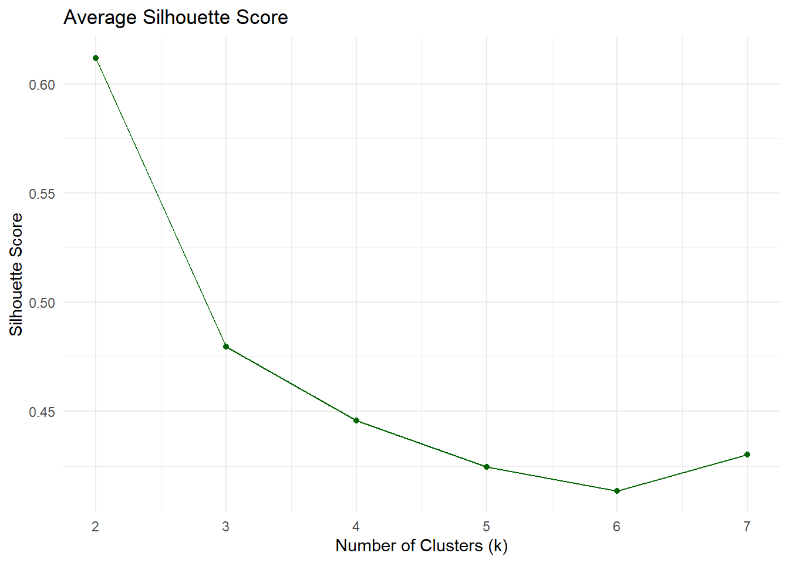

# Load necessary libraries
library(tidyverse)
# Read the CSV
penguins <- read_csv("palmer_penguins.csv")
# Select relevant variables and remove missing values
penguins_clean <- penguins %>%
select(bill_length_mm, flipper_length_mm) %>%
drop_na()From Scratch to Insight: Manual ML Algorithms in Action
1. Introduction
This report presents hands-on applications of core machine learning and statistical modeling techniques using both real-world and synthetic datasets. The exercises cover four major areas:
- Unsupervised Learning with K-Means Clustering: including a manual implementation and comparison with built-in functions using the Palmer Penguins dataset.
- Supervised Learning via K-Nearest Neighbors (KNN): with synthetic data generation, model implementation, and accuracy analysis.
Each section combines custom algorithm development, visual analytics, and statistical performance assessment to deepen understanding of when and how to apply these tools effectively in practice.
K-Means
Data Preparation and Visualization
# Scatterplot of raw data
ggplot(penguins_clean, aes(x = bill_length_mm, y = flipper_length_mm)) +
geom_point(color = "steelblue", size = 2, alpha = 0.7) +
labs(title = "Raw Penguin Data",
x = "Bill Length (mm)",
y = "Flipper Length (mm)") +
theme_minimal()
Manual Implementation of K-Means Algorithm
The kmeans_manual function implements the K-Means clustering algorithm from scratch in R. It begins by randomly selecting k initial centroids from the dataset. For each iteration, the algorithm calculates the Euclidean distance from every data point to each centroid, assigns each point to the nearest centroid, and then updates centroids by computing the mean of all points assigned to each cluster. The loop continues until the centroids stabilize or a maximum number of iterations is reached. This implementation includes safeguards, such as retaining the previous centroid if a cluster becomes empty. The output includes final cluster assignments and centroid coordinates, which are then used to label the data for visualization. This approach mirrors the internal logic of R’s kmeans() function and offers valuable insight into how unsupervised learning algorithms operate step-by-step.
kmeans_manual <- function(data, k = 3, max_iter = 10) {
set.seed(123)
centroids <- data[sample(nrow(data), k), ]
for (iter in 1:max_iter) {
# Step 1: Compute distance to each centroid
distances <- sapply(1:k, function(i) {
rowSums((data - matrix(rep(as.numeric(centroids[i, ]), each = nrow(data)), nrow = nrow(data)))^2)
})
# Step 2: Assign each point to the nearest centroid
cluster_assignment <- apply(distances, 1, which.min)
# Step 3: Update centroids
new_centroids <- data.frame()
for (i in 1:k) {
cluster_points <- data[which(cluster_assignment == i), ]
if (nrow(cluster_points) > 0) {
new_centroids <- rbind(new_centroids, colMeans(cluster_points))
} else {
new_centroids <- rbind(new_centroids, centroids[i, ]) # keep old if cluster is empty
}
}
# Stop if centroids didn't change
if (all(round(as.matrix(centroids), 6) == round(as.matrix(new_centroids), 6))) {
break
}
centroids <- new_centroids
}
return(list(clusters = cluster_assignment, centroids = centroids))
}
manual_result <- kmeans_manual(penguins_clean, k = 3)
penguins_clean$cluster_manual <- as.factor(manual_result$clusters)Visualizing Manual K-Means Clustering Results
manual_centroids <- manual_result$centroids
colnames(manual_centroids) <- c("bill_length_mm", "flipper_length_mm")# Plot manual k-means result (fixed)
ggplot(penguins_clean, aes(x = bill_length_mm, y = flipper_length_mm, color = cluster_manual)) +
geom_point(size = 2, alpha = 0.7) +
geom_point(data = manual_centroids,
aes(x = bill_length_mm, y = flipper_length_mm),
color = "black", shape = 4, size = 4, stroke = 1.5, inherit.aes = FALSE) +
labs(title = "Manual K-Means Clustering (k=3)",
x = "Bill Length (mm)",
y = "Flipper Length (mm)",
color = "Cluster") +
theme_minimal()Built-In kmeans() Clustering and Comparison
# Run built-in kmeans
set.seed(123)
kmeans_builtin <- kmeans(penguins_clean[, c("bill_length_mm", "flipper_length_mm")], centers = 3, nstart = 20)
penguins_clean$cluster_builtin <- as.factor(kmeans_builtin$cluster)
# Plot built-in clustering
ggplot(penguins_clean, aes(x = bill_length_mm, y = flipper_length_mm, color = cluster_builtin)) +
geom_point(size = 2, alpha = 0.7) +
geom_point(data = as.data.frame(kmeans_builtin$centers),
aes(x = bill_length_mm, y = flipper_length_mm),
color = "black", shape = 4, size = 4, stroke = 1.5) +
labs(title = "Built-in KMeans Clustering (k=3)",
x = "Bill Length (mm)",
y = "Flipper Length (mm)",
color = "Cluster") +
theme_minimal()The two plots above compare the results of a manually implemented K-Means algorithm (left) with R’s built-in kmeans() function (right), both applied to the Palmer Penguins dataset using bill length and flipper length as clustering features. Both methods identified similar underlying structure in the data, producing three coherent clusters that align well with natural groupings. The manually implemented algorithm achieved a comparable result, although the specific cluster labels and centroid positions show slight variation due to random initialization and convergence behavior. The consistency between the two visualizations validates the correctness of the custom implementation and illustrates the robustness of K-Means in discovering distinct groups based on geometric distance.
Cluster Evaluation: WCSS and Silhouette Analysis
# Load required libraries
library(cluster) # for silhouette
# Data to cluster
data_kmeans <- penguins_clean[, c("bill_length_mm", "flipper_length_mm")]
# Initialize results
wcss <- c()
sil_scores <- c()
# Loop through K = 2 to 7
for (k in 2:7) {
set.seed(42)
km <- kmeans(data_kmeans, centers = k, nstart = 20)
wcss[k] <- km$tot.withinss
# Compute silhouette score
sil <- silhouette(km$cluster, dist(data_kmeans))
sil_scores[k] <- mean(sil[, 3])
}
# Create result data frame
metrics_df <- tibble(
k = 2:7,
WCSS = wcss[2:7],
Silhouette = sil_scores[2:7]
)# Plot WCSS
ggplot(metrics_df, aes(x = k, y = WCSS)) +
geom_line() + geom_point() +
labs(title = "Within-Cluster Sum of Squares (WCSS)",
x = "Number of Clusters (k)",
y = "WCSS") +
theme_minimal()# Plot Silhouette Score
ggplot(metrics_df, aes(x = k, y = Silhouette)) +
geom_line(color = "darkgreen") + geom_point(color = "darkgreen") +
labs(title = "Average Silhouette Score",
x = "Number of Clusters (k)",
y = "Silhouette Score") +
theme_minimal()
The two charts show how well the data groups into clusters when using different numbers of clusters. In the first chart, the total distance within each cluster drops sharply from 2 to 3 clusters, then decreases more slowly from 4 to 7 clusters. This suggests that 3 clusters give a good balance before the improvement starts to level off.
In the second chart, which shows how clearly separated the clusters are, the best separation happens with 2 clusters. However, the separation becomes slightly worse as the number of clusters increases, especially after 3 clusters. Although 2 clusters are the most distinct, they may not capture all the structure in the data.
Overall, 3 clusters seem to offer the best balance between keeping points close together within clusters and keeping the clusters clearly separated.
K Nearest Neighbors
Synthetic Data Generation (Training Set)
# gen data -----
set.seed(42)
n <- 100
x1 <- runif(n, -3, 3)
x2 <- runif(n, -3, 3)
x <- cbind(x1, x2)
# define a wiggly boundary
boundary <- sin(4*x1) + x1
y <- ifelse(x2 > boundary, 1, 0) |> as.factor()
dat <- data.frame(x1 = x1, x2 = x2, y = y)# Generate synthetic dataset
set.seed(42)
n <- 100
x1 <- runif(n, -3, 3)
x2 <- runif(n, -3, 3)
boundary <- sin(4 * x1) + x1
y <- ifelse(x2 > boundary, 1, 0) |> as.factor()
dat <- data.frame(x1 = x1, x2 = x2, y = y)Visualizing Training Set and True Boundary
# Base plot
ggplot(dat, aes(x = x1, y = x2, color = y)) +
geom_point(size = 2, alpha = 0.7) +
stat_function(fun = function(x) sin(4 * x) + x,
color = "black", linetype = "dashed", linewidth = 1) +
labs(title = "Synthetic Data for KNN",
subtitle = "Dashed line shows the true decision boundary",
x = "x1", y = "x2", color = "Class") +
theme_minimal()Test Set Generation with New Seed
# Generate test dataset with different seed
set.seed(99)
n_test <- 100
x1_test <- runif(n_test, -3, 3)
x2_test <- runif(n_test, -3, 3)
boundary_test <- sin(4 * x1_test) + x1_test
y_test <- ifelse(x2_test > boundary_test, 1, 0) |> as.factor()
test_data <- data.frame(x1 = x1_test, x2 = x2_test, y = y_test)Visualizing Test Set and Boundary
ggplot(test_data, aes(x = x1, y = x2, color = y)) +
geom_point(size = 2, alpha = 0.7) +
stat_function(fun = function(x) sin(4 * x) + x,
color = "black", linetype = "dashed", linewidth = 1) +
labs(title = "Test Data for KNN",
subtitle = "Dashed line shows the true decision boundary",
x = "x1", y = "x2", color = "Class") +
theme_minimal()
Explanation of train vs test
The first plot shows the training data for the K-Nearest Neighbors (KNN) model. Each point is colored based on its class label: class 0 in pink and class 1 in blue. The black dashed line represents the true decision boundary that separates the two classes. The points are spread around this wavy boundary, making the classification task more challenging, especially where the two classes are close together.
The second plot shows a separate test dataset generated in the same way as the training data. Like the training set, the test data also has a mix of class 0 and class 1 points around the same true boundary. This test set will be used to check how accurately the KNN model can predict the class of new, unseen points, especially around the complex boundary region. The similarity in pattern between the two datasets suggests that the test set is a good match for evaluating the model fairly.
Custom KNN Implementation in R
The code above implements a custom version of the K-Nearest Neighbors (KNN) classification algorithm. It begins by defining a helper function to calculate the Euclidean distance between two points. The main knn_custom function then uses this to classify each point in the test set.
For each test point, the function calculates its distance to all training points and identifies the k closest ones. It then checks the class labels of these k neighbors and assigns the most frequent class to the test point. This process is repeated for every point in the test data, and the function returns the full set of predicted labels.
This implementation provides a clear, step-by-step view of how the KNN algorithm works, making it easier to understand the logic behind this popular classification method.
# Function to compute Euclidean distance between two points
euclidean_distance <- function(a, b) {
sqrt(sum((a - b)^2))
}
# Custom KNN function
knn_custom <- function(train_data, train_labels, test_data, k = 5) {
predictions <- c()
for (i in 1:nrow(test_data)) {
# Compute distances from test point to all training points
distances <- apply(train_data, 1, function(row) euclidean_distance(row, test_data[i, ]))
# Find the indices of the k nearest neighbors
neighbor_indices <- order(distances)[1:k]
# Get the labels of the k nearest neighbors
neighbor_labels <- train_labels[neighbor_indices]
# Predict the most common class
predicted_class <- names(sort(table(neighbor_labels), decreasing = TRUE))[1]
predictions <- c(predictions, predicted_class)
}
return(as.factor(predictions))
}Evaluating Accuracy of Custom KNN
# Prepare training and test input
train_X <- dat[, c("x1", "x2")]
train_y <- dat$y
test_X <- test_data[, c("x1", "x2")]
test_y <- test_data$y
# Predict using custom KNN
pred_custom <- knn_custom(train_X, train_y, test_X, k = 5)
# Accuracy
accuracy_custom <- mean(pred_custom == test_y)
paste("Custom KNN accuracy:", round(accuracy_custom * 100, 2), "%")[1] "Custom KNN accuracy: 84 %"Verifying with Built-In KNN (class::knn)
# Load the class package
library(class)
# Use built-in knn() function
pred_builtin <- knn(train = train_X,
test = test_X,
cl = train_y,
k = 5)
# Accuracy comparison
accuracy_builtin <- mean(pred_builtin == test_y)
paste("Built-in KNN accuracy:", round(accuracy_builtin * 100, 2), "%")[1] "Built-in KNN accuracy: 84 %"Accuracy Analysis Across K = 1 to 30
# Initialize vector to store accuracy results
accuracy_vec <- numeric(30)
# Loop over k from 1 to 30
for (k in 1:30) {
pred_k <- knn(train = train_X,
test = test_X,
cl = train_y,
k = k)
accuracy_vec[k] <- mean(pred_k == test_y)
}
# Create a data frame for plotting
accuracy_df <- data.frame(
k = 1:30,
accuracy = accuracy_vec
)ggplot(accuracy_df, aes(x = k, y = accuracy)) +
geom_line(color = "blue") +
geom_point(color = "red") +
labs(title = "KNN Classification Accuracy vs. k",
x = "Number of Neighbors (k)",
y = "Accuracy on Test Data") +
theme_minimal()This chart shows how the accuracy of the K-Nearest Neighbors (KNN) model changes as the number of neighbors increases from 1 to 30. Each point represents how well the model was able to classify the test data for a given value of k.
The accuracy goes up and down as k changes. It reaches high points around k = 5, k = 17, and k = 29, where the model performs best. The highest accuracy is seen at k = 29. This suggests that using more neighbors can sometimes help the model make more reliable predictions by reducing the effect of noisy points.
There are also lower points in the chart, especially around k = 10 and k = 26, where the model performs worse. This shows that choosing the right value of k is important, and testing different options is necessary to find the one that gives the best results.